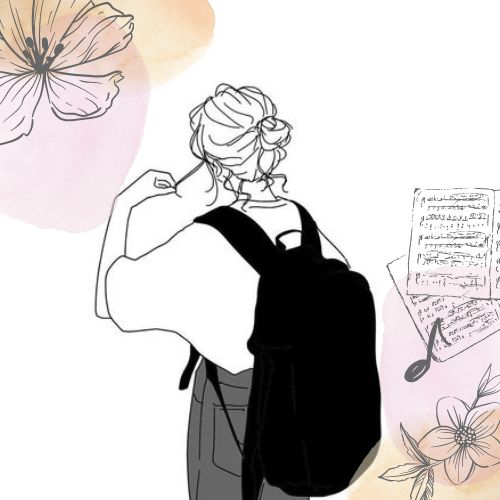

私について

2020年大阪音楽大学卒業後、家電量販店内の携帯ショップにて販売業を経験。
IT業界の発展と人手不足という状況に興味を持ち、知識を深めたいという考えから2023年よりPCとネットワークのヘルプデスク業務に転職。
学生時代に演奏会のチラシやプログラムを作成した経験と今のITの知識を生かしてWEBデザイナーになるための学習をしたいと思い、2024年侍エンジニアに入学。
販売業やヘルプデスク業務で培ったコミュニケーション能力と相手の立場に寄り添った考え方を持つことを生かし、未経験ですが様々なことに挑戦中です。
学んだスキル

HTML/CSS

JavaScript

Photoshop

WordPress

jQuery